用动作对节拍，不用剪辑对节拍
音乐片的结构先从歌词和段落来：主歌建立空间，副歌给一个可重复的记忆动作，桥段换关系或空间。每个段落只承担一个功能，不要在一段里既讲故事又炫技。
把音乐导进时间线，先标段落边界，再放镜头。镜头长度由动作决定，不由“每两秒切一刀”决定。
边界
画面不能解释歌词。歌词说“离开”，不代表必须拍一扇门；拍人物手里的车票，可能更具体。
现场
先标歌的主歌、副歌、桥段时间；主歌用长镜头建立空间，副歌每 4 拍切一个记忆动作。
DIAGRAM / MV
MV：歌是时间轴

怎么做
- 先标歌的主歌、副歌、桥段时间。
- 主歌用长镜头建立空间。
- 副歌每 4 拍切一个记忆动作。
别踩
别把每句歌词都拍成插画；那是配图，不是 MV。
图片说明：本页封面、图解与步骤图是编辑示意或结构图，不是本页实测照片，也不能当作器材测试证据；AI 辅助生成的图会在图注标出。判断器材或画面，以正文的测试条件与现场记录为准。